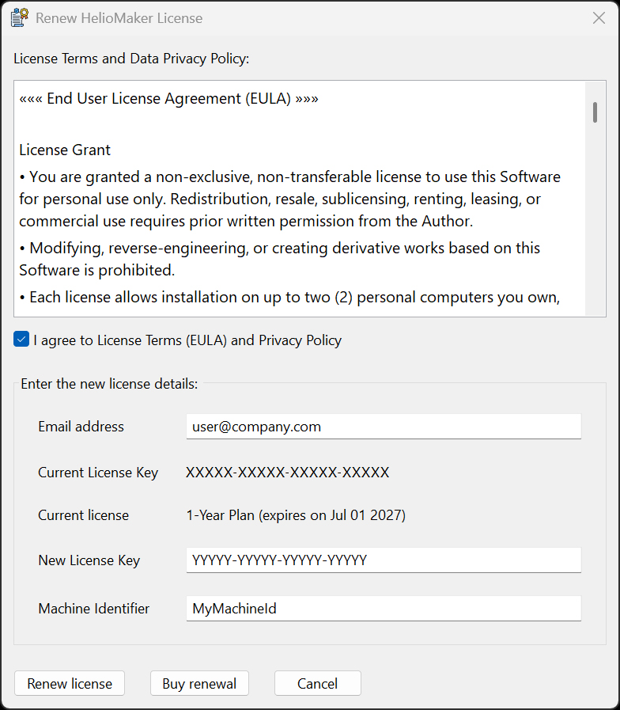

The Renew License option helps users move from a soon-terminating HelioMaker license to a new license. The renewal workflow is designed to reduce interruption by allowing carry-over from the expiring license to the new one when the license data is valid and the renewal conditions are met.

The renewal dialog displays the license terms and privacy policy, the email address, the current license key and license status, the new license key, and the machine identifier. Use Renew license after entering the new license details. The Buy renewal button opens the renewal purchase path when a new license has not yet been purchased.
During renewal, HelioMaker verifies the current activation and the new license information. If the renewal is accepted, HelioMaker updates the local license state so the new license can replace the expiring one without requiring a full manual deactivate/reactivate cycle. When the renewal conditions are met, remaining days from the existing 1-year license are carried over to the new license.
License management has also been improved beneath the hood to provide more stable and secure operation, clearer messages, and a more polished user interface for activation-related workflows.
If renewal fails, read the message shown by HelioMaker and verify the email address, license key, internet connection, and PIN. If the old license has already terminated or the carry-over conditions are not met, use the standard activation workflow or contact customer support.